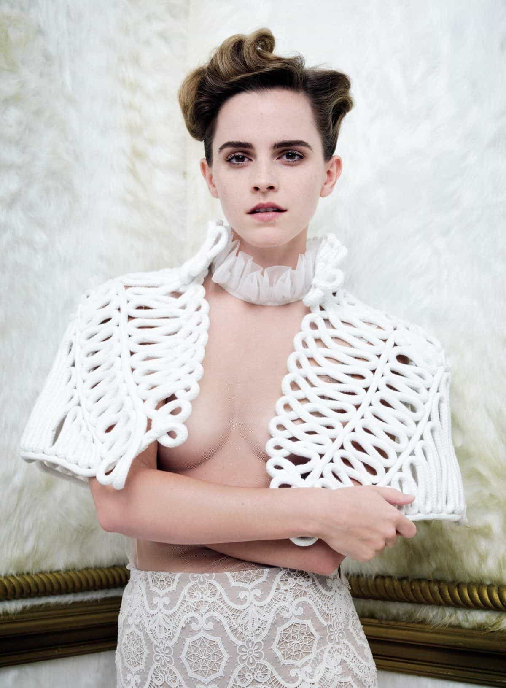
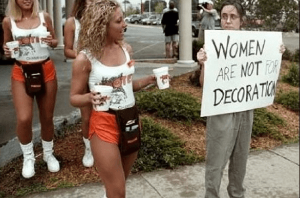

Kyle is an entrepreneur and nomad who has been living abroad since 2016. He blogs at This Is Trouble. Follow him on Facebook.


“Men, I would like to take this opportunity to extend your formal invitation. Gender equality is your issue, too.”
– Emma Watson, 20 September 2014—HeForShe Campaign, United Nations Headquarters
Well, Emma Watson recently extended a formal invitation to the entire world to view her boobs in Vanity Fair.

But she’s not too happy about the fact that people are taking it as a sexual invitation to see her boobs. She’s far more upset that people are saying that it’s a bad choice for her feminist image.
Of course, Watson has a notable history of being a hardcore feminist. For better or worse, she’s always thrown herself right into the thick of things when it comes to campaigning for women’s rights. To her credit, she also has said that feminism is not about hating men:
The more I spoke about feminism, the more I realized that fighting for women’s rights has too often become synonymous with man-hating. If there is one thing I know for certain, it is that this has to stop.
For the most part, other feminists and females as a whole have backed her. However, this latest photo shoot has put them all up in arm’s regarding Watson. People are saying she can’t be a feminist and take those kind of photos.
Watson only real counterpoint to her critics has been: “I can’t be a feminist and have boobs?”
Whether or not you think this photo of her is attractive or not is beyond the point. I’d wager that most heterosexual men would say no (or that there are far better photos of her out there), but the photo itself is well done. I think many would agree that the photography aspect of it is solid. If not for showing the underboobs, many would consider it a nice piece of art and not a sexual image.
Watson’s counterpoint to her critics has been that women should be allowed to be sexual beings. Just like men. Feminism is all about how women should have the same sex drives, should be able to be sexually slutty liberated like men, and that men and women in the dating scene should all be equal.
Great, but you simply cannot preach “women should be sexually liberated” and “don’t objectify” me in the same sentence.
It doesn’t work. If you want to be sexually liberated as a woman, this means that you are free to be as sexual as you want with whomever you wish. It also gives anyone and everyone the right to judge you as a sexual creature.
What does this photo do? It screams that women are in fact sexually liberated. But by posing in a sexual photo, Watson opens herself up to being sexually objectified. Imagine that.

Many people have waged war since the photo was released, saying that Watson is going against any and all feminist ideas by posing the way she did. Watson’s response is the following:
It just always reveals to me how many misconceptions and what a misunderstanding there is about what feminism is.
Feminism is about giving women choice. Feminism is not a stick with which to beat other women with. It’s about freedom, it’s about liberation, it’s about equality. I really don’t know what my tits have to do with it. It’s very confusing.
I’m confused. Most people are confused. No, I’m just always just quietly stunned.
This is the attitude of a starlet who has had everything handed to her since she was given a wand in her hand to play Hermione Granger when she was eleven years old. Watson’s views of what is tough in the world and what is not is greatly skewed. She’s never been through the Soviet suburbs of Ukraine, or seen the ghettos of Colombia—instead she travels by private plane. She simply cannot relate to the every day person.
Nobody feels bad for Watson because she got paid less millions than Daniel Radcliffe in Harry Potter. Even the most vile, disgusting feminist out there can not relate to Watson, despite what comes out of her mouth. She lives on a different planet. A planet where she thinks she should never be wrong (because of feminism, star power, and more), but her general role in the spotlight makes her a prime target for everyone. Not just feminists.
It’s this inability to grasp a simple concept—that non-famous, middle class folk never feel bad for stars or successful businessmen—that makes Watson look stupid when she’s giving her response interview.
For better or worse, we’re just animals at our core. You can glitz and glam all you want in the covers of Vanity Fair, but you remove the “Emma Watson” from that photo. Say that you have no idea who she is, her past history, or anything.
If you show that photo to any person, their immediate thought is going to be something along the lines of, “THAT is a sexual photo.”
There is simply no way around it. It doesn’t matter how talented the photographer is, how beautiful the photographs turn out, nothing. Any sane person’s first thought is going to jump to the fact that the picture is sexual. And Watson seems very out of touch with the fact that sex sells.
Sugar dating websites have become a popular way for players to meet new girls. Rich guys take one look at girl’s photos and offer to buy them cars, apartments, and fly them around the world. The fact that Emma Watson thinks that her photo should not be taken in a sexual light shows just how out of touch she is with the rest of the world.
Watson just pours fuel on the fire with her comments. Watson stated in this video that “Feminism is about giving women choice.”
Okay, deal. Emma Watson, you, as a woman, have the choice. You, yourself, in all of your glorious womanhood, CHOSE to go on the cover of Vanity Fair and pose like you did. You chose to show nearly all of your breasts on a major magazine, while at the same time preaching that women should not be treated as sex objects (for many years).
You have also repeatedly said that feminism is about choice. Well, newsflash—that means that people have the choice to feel a certain way about you, your photo shoot, and overall views.
If you want to be taken seriously, start by putting a shirt on.
When I started writing this article, I felt mostly annoyed about the whole situation. But now, as I’ve watched her interview a few times, I’ve started to feel a little bad for Watson. She is a prime result of feminism gone bad. She holds to herself a victim complex that no “normal” person can possibly relate to. Nor does she understand why people don’t. In her world, she can do no wrong (because feminism/starlet), but when she does, and people criticize—it hurts her. You can see it in her eyes.
Emma Watson seems to me like a lost girl, unable to figure out why she can say and do all the right things that she’s supposed to say—but still be criticized. She wants to be sexually liberated because she’s been told that’s what she’s supposed to be. And that as a feminist icon, it is who she must be. She also believes she somehow must be sexually liberated and yet not be a symbol to sex.
It’s a shame that she’ll probably never be able to grasp the why behind any of it. The reality of the situation is that modern-day feminism simply has no logical basis for many of their points. And until it gets put in check, girls like Emma Watson will continue to be the scapegoats.
Instead of dating feminists, turn modern dating into your personal playground. Find out how in my book, Cracking OkCupid. For more articles, visit my blog This Is Trouble.
Read More: 20 Things Women Should Be Shamed For, Not Celebrated